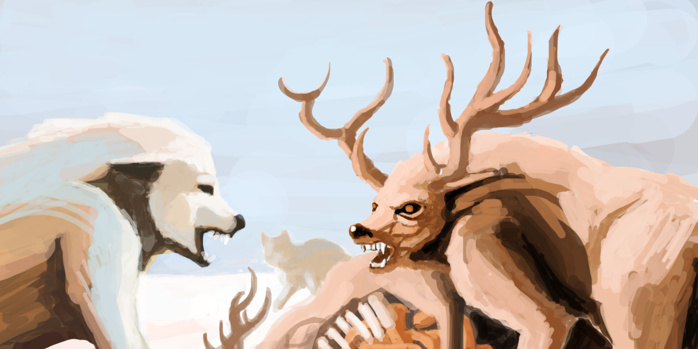
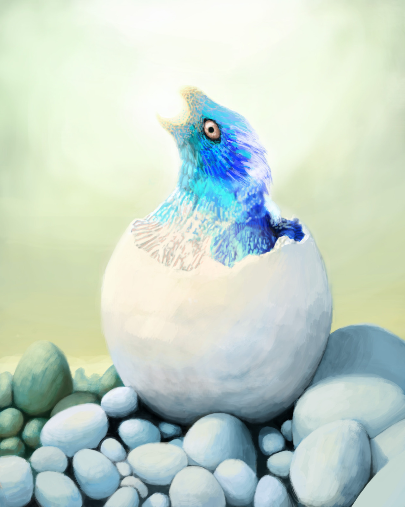
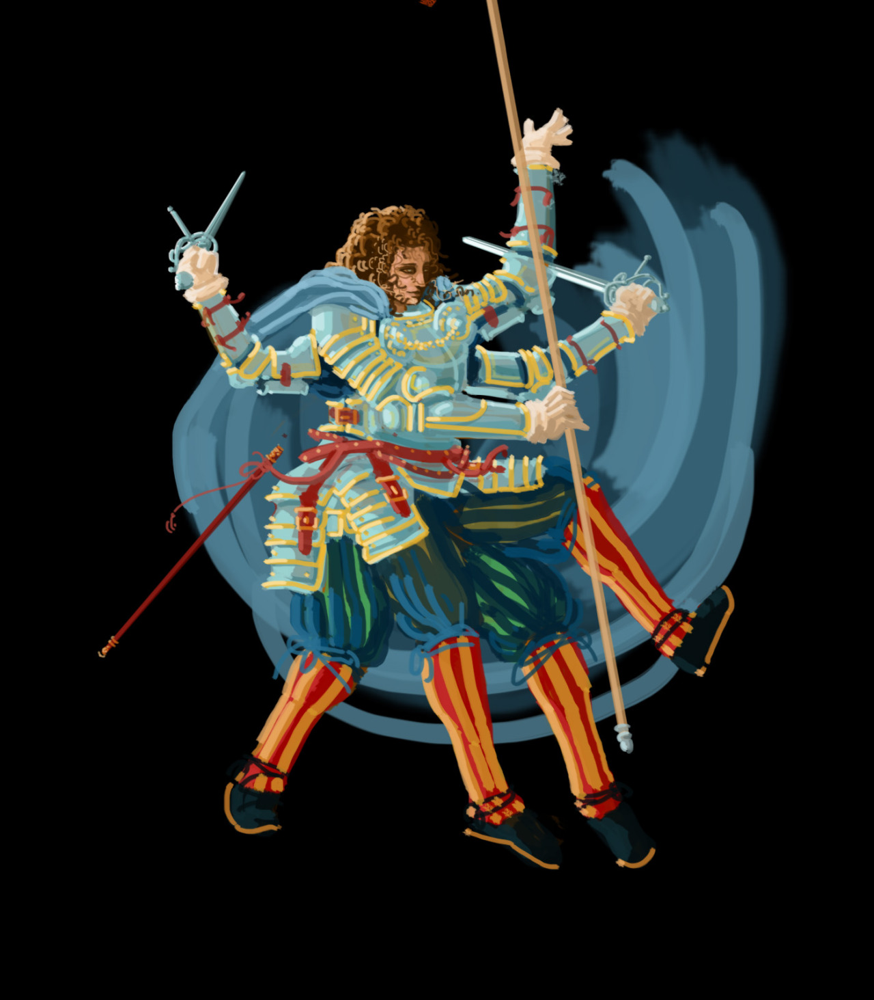
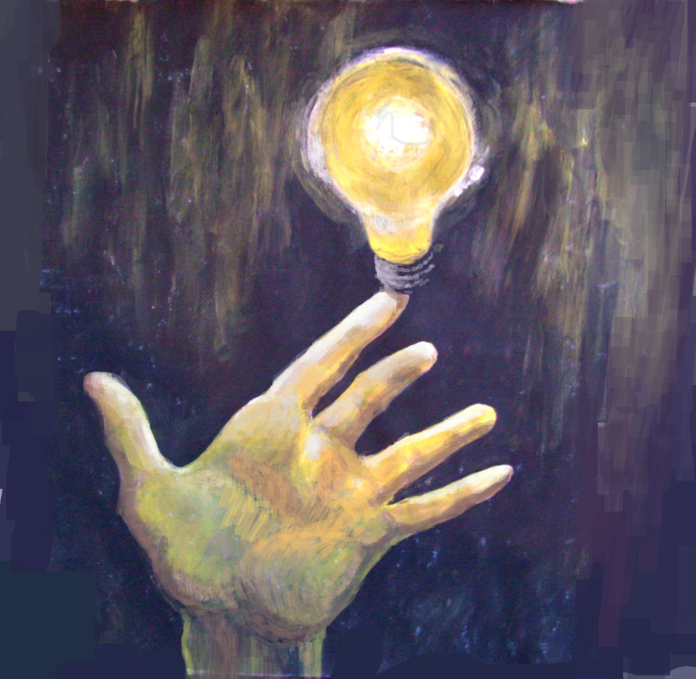

Art
School of Athens
Copied from Raphael. The characters are actually color coded in the original, so you can tell whose side each person was on.
The Magic Flute
Swiss Army Knife.
Centaur

Cannon Towns
Candle Towns.
Good idea for fantasy world building: mixing different scales.

Some cute cars
Onion

Hot Air Balloon Bird

Cats and dogs.

And an older version, which I like better:

Flying Nautiluses
Been experimenting with things coming up close to the camera.
Stag
Wolf Stag
Embryo

Colossus I
Colossus II
Emperor Penguin

Dragon Knight
Should try adding real photos to drawings more often.
Dragon-riding Knight

Also made some logos to go with this dragon-riding lance-wielding knight concept:
 Dragon Lance I,
Dragon Lance II,
Dragon Lance III.
Dragon Lance I,
Dragon Lance II,
Dragon Lance III.
Cat and Mouse
Wyrms
Wyrm Eggs

Time Traveler
TODO. Turn this into a series where he travels to different places and times searching for Something.

One with the Machine
Light and Magic
Gotta reuse the sorcerers with their cone heads and fancy hats and pointy noses.
Portrait of a Blind Man

One Man Band

Another Multitasker
Been trying out a new minimalist technique where you don't overwork your strokes. Pretty fast if you know what you're painting.
Christian Bale in Fallout 4
These RPG character creation tools are amazing! Now everyone can sculpt. What else is impossible?!
Chloe Moretz
Chess Models
For a game I'm making called Ragnarook. Should do more sculpting, and modelling. And rigging. Oh so much to learn.
Portraits


Drew these in a giant art book that has a lot of white space.
More sketches


Double Rainbow
Light Bulb

There's always a better way

Use reference, especially if you're painting imaginary things.
Portrait without Face
Liking the square brush.
More Portrait


No one in particular
Ram

Light study
Was painting someone else but looks a bit like Jennifer Lawrence.
Learning how to model buildings

Anglerfish


Photo editing practice
2 Oct 2016. Yuu Aoi

10 Oct 2016. Angela Sarafyan from Westworld
Donnie Yen

In Ford's (Anthony Hopkins) office in Westworld there's a mask that looks a lot like Donnie Yen.
Portrait practice

Faces are easier to paint if you're not worried about who they look like.
23 Oct 2016. Nancy Skerret (Nell Hudson) from Victoria
Polar bear

Learning to use the soft brush again, and blurring, lots of blurring.